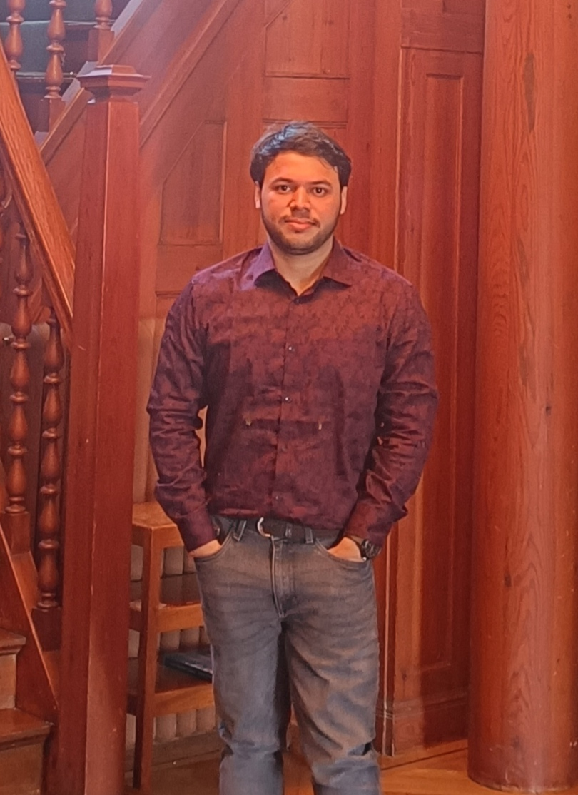

Biswarup Saha
Senior Research Fellow @ ISI Bangalore 🇮🇳
Hello! 👋 I am a Senior Research Fellow at the Indian Statistical Institute, Bangalore Centre. My research lies at the intersection of Operator Algebras and Quantum Information Theory.
I am currently pursuing my research under the supervision of Prof. B. V. Rajarama Bhat.
🎓 Education
Ph.D. in Mathematics
Indian Statistical Institute, Bangalore
2022 - Present
Masters in Mathematics
Indian Statistical Institute, Kolkata
2020 - 2022
Bachelors in Science
Presidency University, Kolkata
2017 - 2020
⚛️ Research
My primary research interests revolve around Operator Algebras and their applications to Quantum Information Theory, where I want to understand how different properties of quantum dynamical semigroups change with time using operator algebraic techniques.
Publications & Preprints
- Spectral radii for subsets of Hilbert C*-modules and spectral properties of positive maps B. V. Rajarama Bhat, Biswarup Saha, and Prajakta Sahasrabuddhe Positivity 30, 49 (2026) View Published Article ↗
- A complete characterization of eventually entanglement breaking unital quantum channels B. V. Rajarama Bhat, Pankaj Dey, and Biswarup Saha arXiv preprint arXiv:2609.24168 (2026) Read on arXiv ↗
👨🏫 Teaching
All teaching duties listed below were undertaken at the Indian Statistical Institute, Bangalore Centre.
-
Geometry (B.Math III) Instructor: Rumpa MasantaJan 2026 — May 2026
-
Advanced Linear Algebra (M.Math II, B.Math III) Instructor: B. V. Rajarama BhatJan 2025 — May 2025
-
Game, Graph and Algebra (M.Math II, B.Math III) Instructor: Yogeshwaran DhandapaniAug 2024 — Nov 2024
-
Analysis on Graphs (B.Math III) Instructor: B. V. Rajarama BhatAug 2023 — Nov 2023
📬 Get in Touch
If you are interested in my research work, have questions, or just want to discuss Mathematics, please feel free to reach out to me!
Indian Statistical Institute, Bangalore Centre
8th Mile, Mysore Road, RVCE Post
Bengaluru, Karnataka 560059